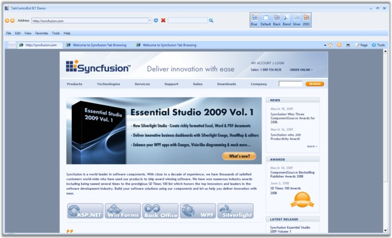
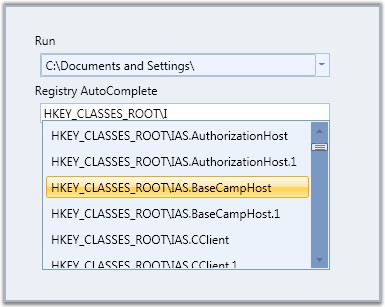
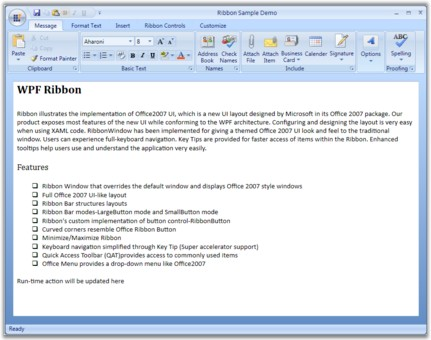
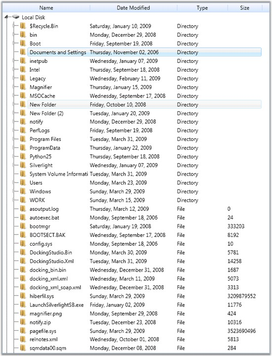
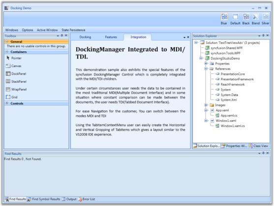

Essential Tools for WPF is a set of new user interface components for the Microsoft's Windows Presentation Foundation framework. In some cases, they extend the functionality provided by the standard framework controls. It is intended for those users who look for additional functionalities such as auto-completion and new components such as group bar in addition to the existing WPF framework. The package consists of a comprehensive set of components that are required for building modern windows applications including Docking, Ribbon, Tabs, TreeView, Editors and much more.
Real World Scenarios
Some of the real world scenarios of Tools WPF controls are illustrated in the below images.

Figure 1: TabControlExt in Internet Explorer

Figure 2: AutoComplete Control

Figure 3: Ribbon control in Outlook 2007

Figure 4: TreeViewAdv control in Windows Explorer

Figure 5: Docking Manager in Visual Studio
Key Features
The following are the key features of Essential Tools for WPF:
· TreeViewAdv control allows you to display hierarchical data in a tree structure. It has items that can be expanded and collapsed. Some of it's features are as follows:
o Provides support to add any number of items to the control.
o Developed using UI Virtualization; enabling enhanced performance.
o Data binding support.
· GroupBar control allows you to implement list-type controls in the UI, similar to the Microsoft Outlook Bar. It has a container to host controls within it. Some of it's features are as follows:
o Vertical and Horizontal layouts and orientation of GroupBar items.
o Alignment and Orientation of GroupView Items.
o It supports expansion of multiple tabs.
o ToolTip support for GroupView items
· DockingManager implements an architecture that allows child controls to be docked to any part of the window as in Microsoft Visual Studio. Some of it's features are as follows:
o Integrated MDI / TDI logic with the DockingManager.
o Various in-built window switchers available for navigating in between the windows.
o In-built context menu support such as Tab list context menu and tab item context menu support.
· AutoComplete control provides live drop-down hints to users as they type in the keywords. It guides the users to select an item from the list of the text instead of entering the whole text.
· By using TabControlExt, an application can define multiple pages for the same area of a window. Some of it's features are as follows:
o Support to add Header Images
o Supports visual customization
o Facilitation of different layout types for enhanced usage
User Guide Organization
The product comes with numerous samples as well as an extensive documentation to guide you. This User Guide provides detailed information on the features and functionalities of the Essential Tools for WPF. It is organized into the following sections:
· Overview—This section gives a brief introduction to the product and its key features.
· Installation and Deployment—This section elaborates on the install location of the samples, license etc.
· What's New—This section lists the new features implemented for every release.
· Getting Started—This section guides you on getting started with WPF application, controls etc.
· Concepts and Features—The features of individual controls are illustrated with use case scenarios, code examples and screen shots under this section.
Document Conventions
The conventions below will help you to quickly identify the important sections of information, while using the content:
|
Convention |
Icon |
Description of the Icon |
|
Note |
|
Represents important information. |
|
Example |
Example: |
Represents an example. |
|
Tip |
|
Represents useful hints, that will help you in using the controls and features. |
|
Additional information |
|
Represents additional information on the corresponding topic. |
 Note:
Note: